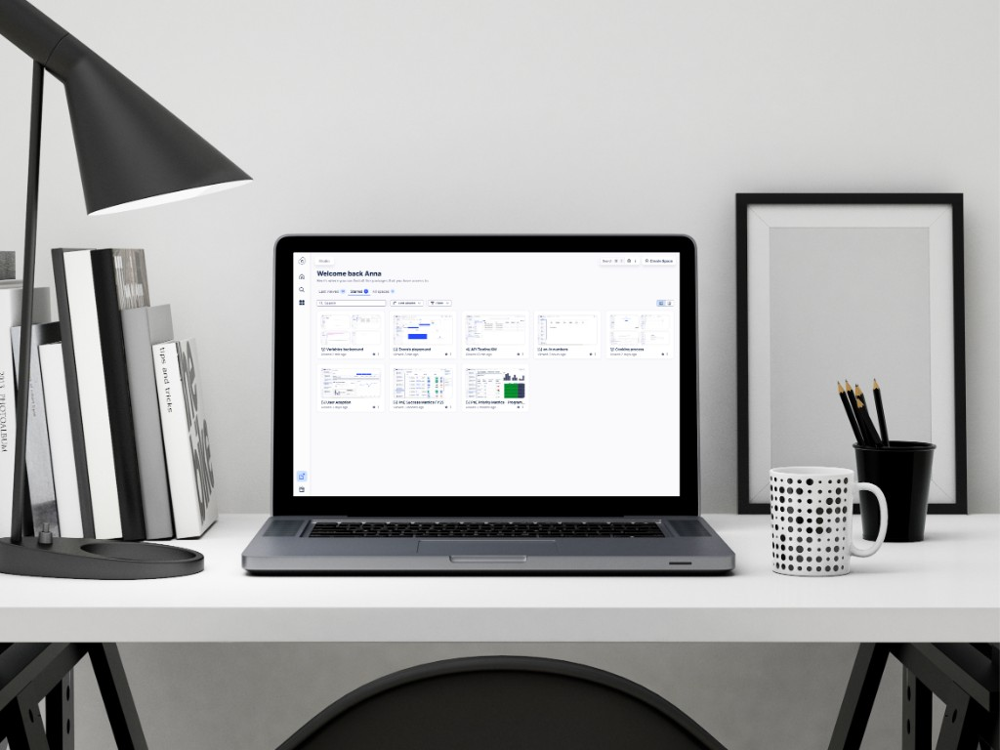
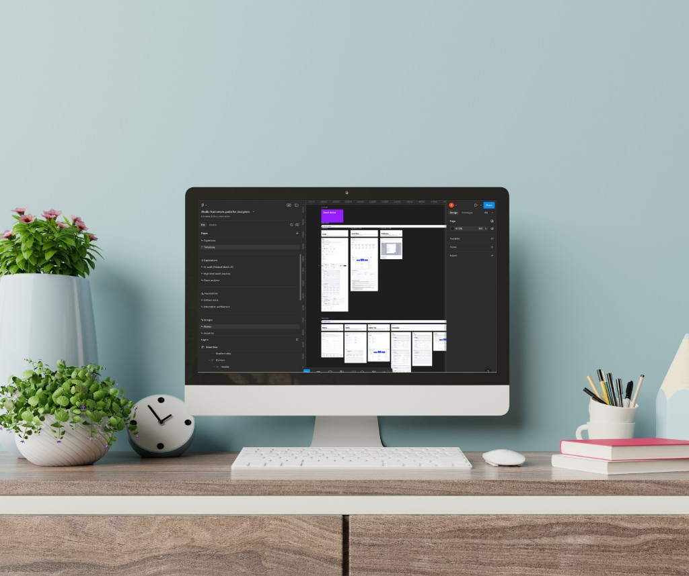
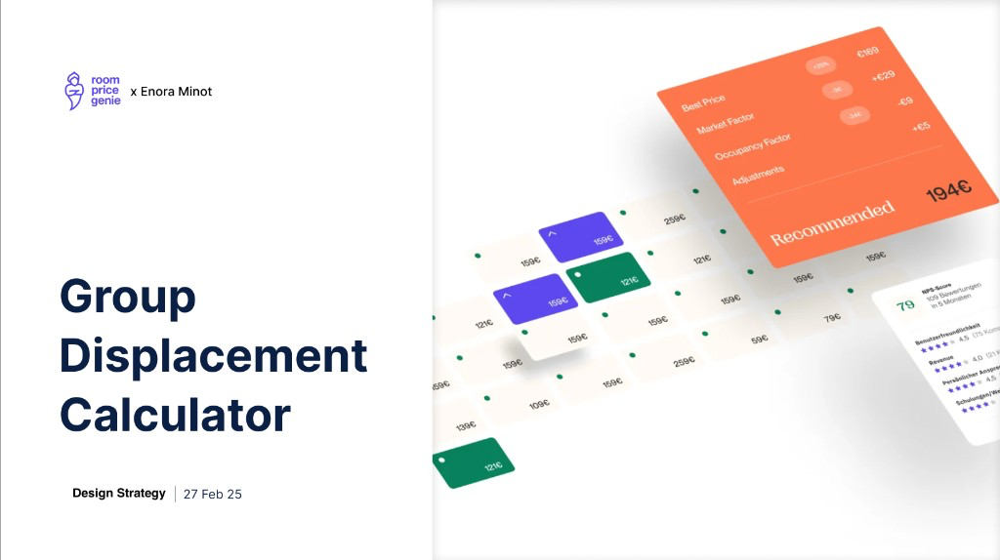
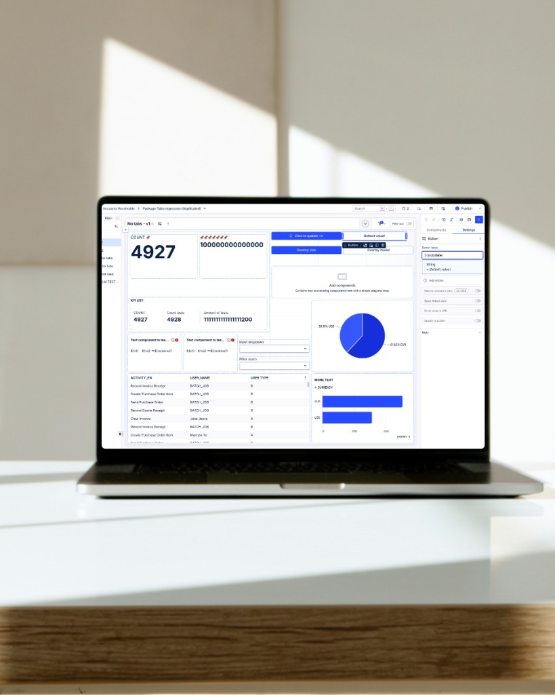
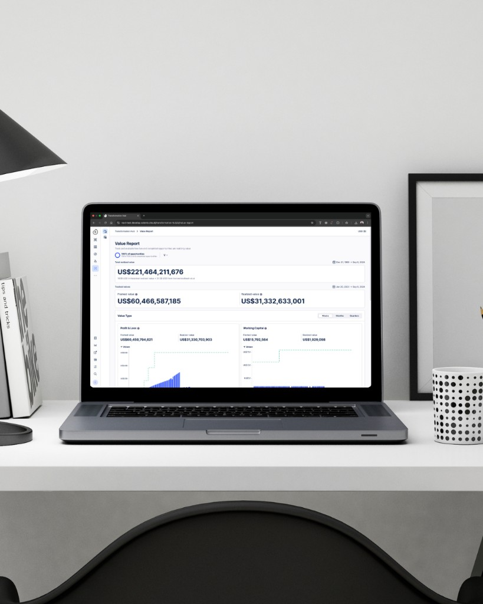
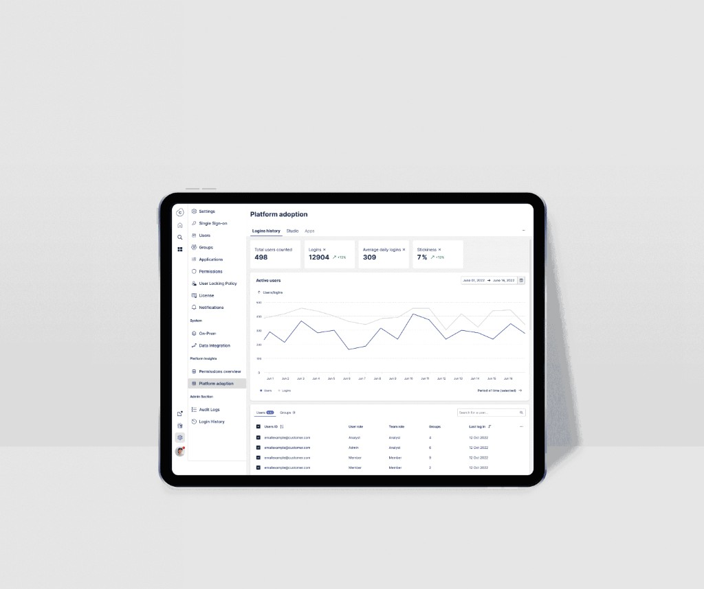

Enora Minot
Home
Work
About
Contact
Home
Work
About
Contact
01 / 07

Design concept · Studio · 2025
File
management system
View project ↗
02 / 07

Design System · 2025
Studio
Framework
View project ↗
03 / 07

UX Strategy · 2025
Pricing calculator
tool
View project ↗
04 / 07

Celonis Views · Product design · 2025
Smart inputs
& Variables
View project ↗
05 / 07
AI Design · Dev Tools · 2024
AI Annotations
Builder
View project ↗
06 / 07

Product Design · 2023
Transformation
Hub
View project ↗
07 / 07

Product Design · 2022
Admin Console
& Analytics
View project ↗
Drag to Explore